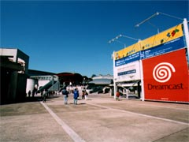
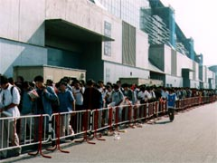
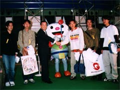
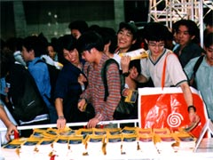

10月9〜11日、千葉・幕張メッセの広大な1〜8ホールに、イベント史上最大・1481小間の出展ブースを集め、「東京ゲームショウ '98秋」は開催されました。
一般公開日初日の10日には、開場を待つ人が史上最高の約3万8000人に達し、続く11日も、会場の周りにぐるりと人、また人の列が。そのゲームファンの熱意にこたえようと、イベント事務局は時間を30分繰り上げ、両日とも9時30分に開場しました。
また10日には、開場を待つ列の先頭の5人に、CESA上月景正会長から記念品の贈呈が行われました。嬉しさに笑みがこぼれる若者たちと、上月会長は力強く握手！
3日間の会期で、来場者の合計は15万6455人。4回連続の動員記録更新となり、人々のゲームへの高い関心を印象づけました。

9日早朝。会期中は、連日すばらしい快晴
|

10日、開場前に列をつくった人々は約3万8000人
|

フェレッタも祝福！ 一番乗りの来場者たち
|

ついに開場！ 思わずほころぶファンの顔
|
次へ
|